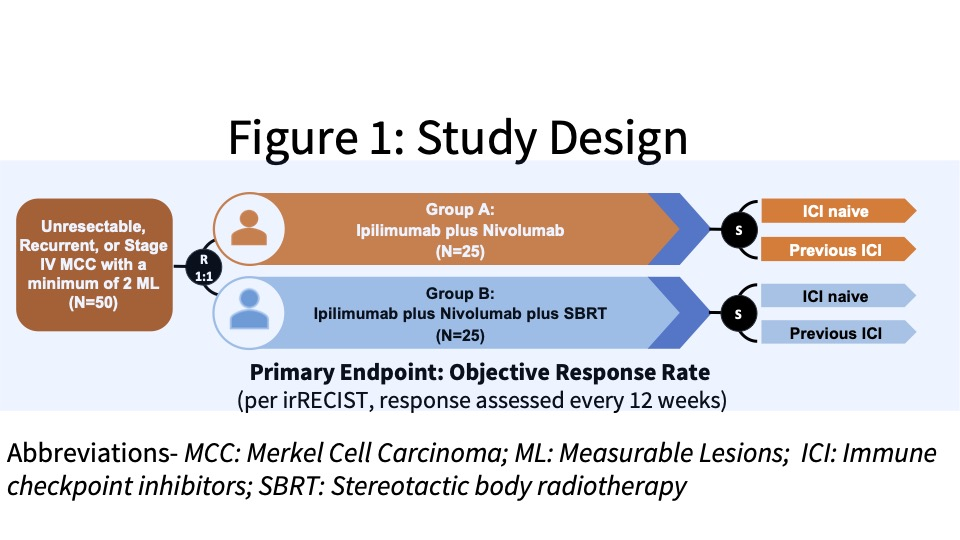
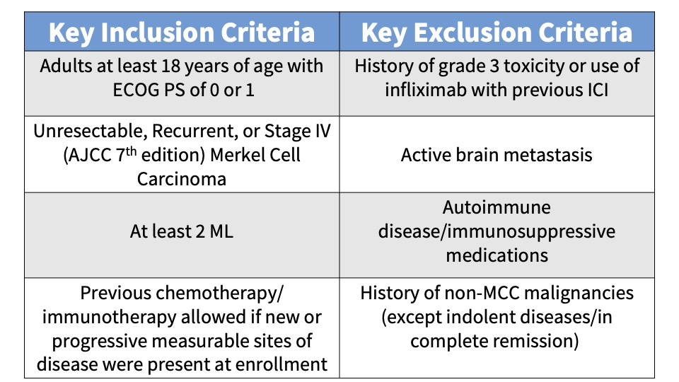
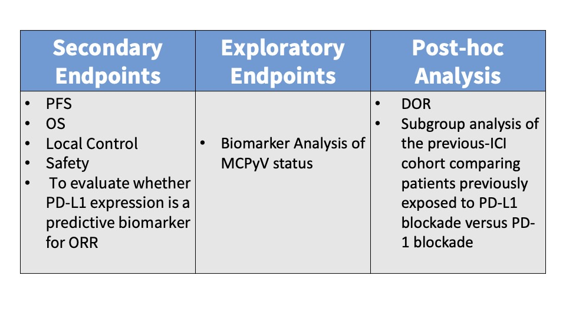
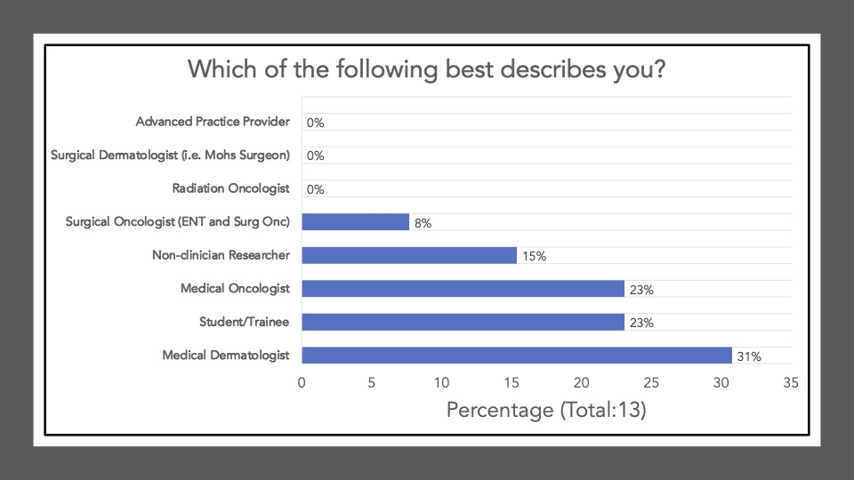
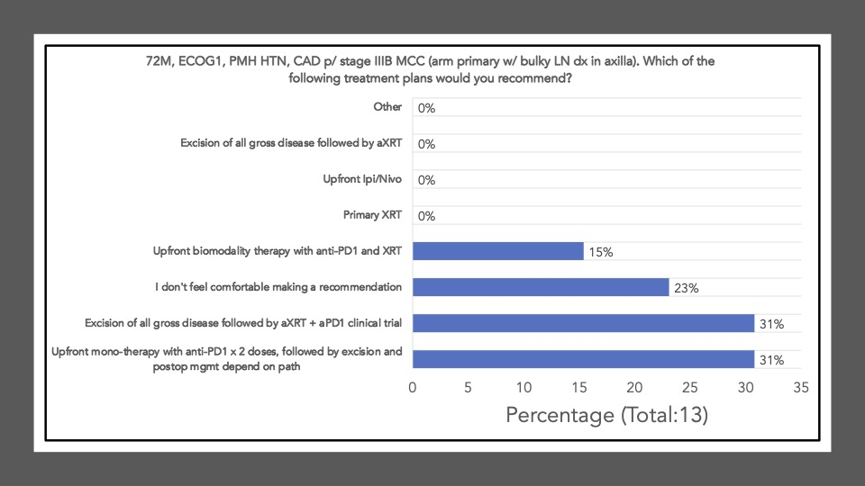
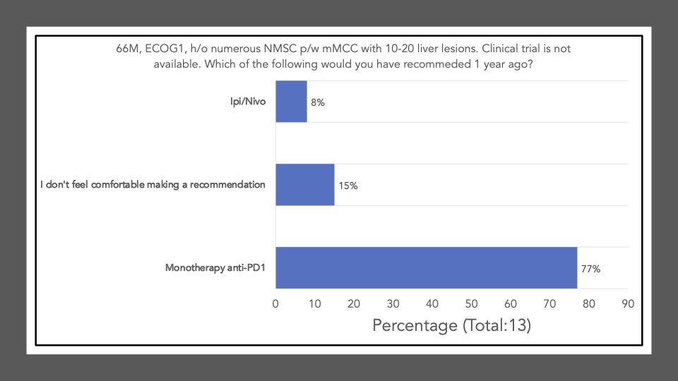

Ipi/Nivo for Advanced MCC
Perspectives on the Science piece we reflect on the impact of the recently published article “Combined Nivolumab and Ipilimumab with or without Stereotactic Body Radiation Therapy for Advanced Merkel cell carcinoma - A Randomised, Open Label, Phase 2 Trial”.
![]()
Featured Article
Combined Nivolumab and Ipilimumab with or without Stereotactic Body Radiation Therapy for Advanced Merkel cell carcinoma: A Randomised, Open Label, Phase 2 Trial. Kim et al. Lancet 2022 Sep 24;400(10357):1008-1019. PMID: 36108657
Introduction
On November 7th, 2022, the multi-institutional Cutaneous Oncology Interest Group Journal Club reviewed the recently published Lancet article “Combined Nivolumab and Ipilimumab with or without Stereotactic Body Radiation Therapy for Advanced Merkel cell carcinoma: A Randomised, Open Label, Phase 2 Trial”. Kim et al. (2022) Participants included clinicians and investigators from Massachusetts General Hospital, Mass Eye and Ear Infirmary, Brigham and Women’s Hospital, University of Washington School of Medicine, the National Institute of Health, Northwestern University, University of Pennsylvania and Moffitt Cancer Center. Importantly, the comments in this article represent the views of the authors of this Perspectives on the Science piece after the Journal Club. It does not represent views of any other members of the Interest Group or the affiliated institutions. In this article we provide a summary of the discussion regarding this important contribution to the literature. Of note, one participant of the Journal Club is an investigator of the discussed study and an author on the Lancet article.
Background for the Study
Merkel cell carcinoma (MCC) is a rare cutaneous neuroendocrine carcinoma often associated with chronic ultraviolet light exposure, a suppressed or weakened immune system, and/or the Merkel Cell Polyoma Virus (MCPyV). This aggressive skin cancer has a high distant metastasis rate, associated with a poor prognosis.
The advent of immunotherapeutics and the regulatory approvals of anti-PD-L1 and anti-PD-1 agents for MCC have revolutionized the treatment landscape. Avelumab received an accelerated FDA approval for metastatic MCC in 2017. Pembrolizumab was approved by the FDA in 2018 for the treatment of recurrent, locally advanced, and metastatic MCC. Immunotherapy is associated with durable responses in MCC and pivotal trials reported an objective response rate (ORR) of 39.7% (95% CI 30.7-49.2) for avelumab in the first line setting and an ORR of 33% (95% CI 23.3–43.8) in the chemotherapy-refractory setting. Kaufman et al. (2016) , D’Angelo et al. (2021) , D’Angelo et al. (2020) . An ORR of 58% (95% CI 43.2–71.8) was observed with pembrolizumab in the first line setting. Nghiem et al. (2016) While anti-PD-L1 and anti-PD-1 monotherapy have been established as the standard of care for the treatment of advanced MCC, there are few systemic therapy options for those patients who have primary or acquired resistance and fail anti-PD(L)-1 treatment. Therefore, evaluating combination ipilimumab with nivolumab in patients who progress on anti-PD(L)-1 monotherapy as well as immunotherapy-naïve patients with MCC is warranted. Finally, since MCC is exceptionally radiosensitive and subablative hypofractionated radiotherapy may prime for anti-tumor immune responses, assessing combination ipilimumab with nivolumab in immunotherapy-naïve and refractory patients with or without the addition of stereotactic body radiotherapy (SBRT) is worthy of investigation. Demaria, Golden, and Formenti (2015)
Study Design

This study received funding from the company and patients were enrolled from the Moffitt Cancer Center and Ohio State University James Cancer Hospital & Solove Research Institute. The investigators conducted an open-label, Phase II study with eligible patients randomized (1:1) to Group A or B, two experimental groups. Group A was designed to evaluate the clinical efficacy of combination ipilimumab plus nivolumab (Ipi/Nivo) in patients with unresectable, recurrent, or stage IV MCC and Group B was designed to determine the clinical efficacy of stereotactic body radiotherapy (SBRT) with combination Ipi/Nivo. Patients were stratified as ICI-naïve or following previous ICI failure (See Figure 1).
Subjects were administered 240 mg intravenous (IV) nivolumab every 2 weeks and IV ipilimumab 1 mg/kg every 6 weeks. Patients randomized to Group B also received SBRT to a minimum of one tumor/lesion site at a dose of 24 Gy (3 fractions). The primary endpoint was the ORR in all eligible randomized patients per immune-related Response Evaluation Criteria in Solid Tumors (irRECIST). See the tables below for key inclusion and exclusion criteria and secondary and exploratory endpoints.


Main Findings
Responses were observed in 18/25 (72%) of the subjects enrolled in Group A and 12/23 (52%) of the Group B patients. No statistically significant difference was reported between the two experimental groups (p value = 0.26). Analysis of the pooled ‘ICI-naïve’ versus ‘previous-ICI’ cohorts showed that 100% (95% CI 82-100; 22/22 subjects) of the ICI-naïve patients experienced an objective response while only 31% (95% CI 15-52; 8/26 subjects) of the previous-ICI patients had an objective response. Reported adverse events (AEs) were attributed to combination Ipi/Nivo with minimal SBRT-AEs observed. Any-Grade AEs occurred in 90% (40/50) of the subjects and Grade III/IV AEs were reported in 40% (10/25) of Group A patients and 32% ( 8/25) of Group B patients.
Discussion Points
We began Journal Club on November 7th, 2022 by administering a poll among the attendees via poll everywhere. Our goal was to conduct a brief survey before and after journal club discussions to determine the current practices of clinicians participating in the dialogue and whether review/discussion of the article would be ‘practice-changing.’ The following reflects the survey results of the poll administered at the start of the meeting:




The following reflects the survey results of the poll after our discussion and article review:


Survey results demonstrate that upon review and discussion of the article, the study is indeed “practice-changing” among the Cutaneous Oncology Interest Group Journal Club attendees. According to the poll, the vast majority of participants were not administering Ipi/Nivo for advanced MCC a year ago, and have never administered Ipi/Nivo as a first-line therapy for MCC. The post-discussion survey shows the majority of participants will change their treatment recommendations for MCC after review of the article, and are more likely now to recommend Ipi/Nivo in light of the data/results of the phase II trial. With an ORR of 100% in the ICI-naive cohort, potentially administering Ipi/Nivo in the first-line may be a reasonable management option moving forward. However, we must continue to weigh potential risks in the setting of increased toxicity with combination ICI versus monotherapy anti-PD(L)-1. Below, a table of the Grade III+ reported AEs from the avelumab, and pembrolizumab pivotal trials are listed alongside the grade III/IV AEs described in this study. Of note, the dosing regimen utilized in both Group A and B differs from that recommended for melanoma. Ipi was administered every 6 weeks at 1mg/kg with nivo every 2 weeks at 240mg and demonstrated clinical efficacy in MCC. This may likely be associated with reduced toxicity comparable to other dosing regimens, but appears higher than anti-PD(L)-1 mono therapy. However, direct comparisons across the trials with different numbers of enrolled patients and duration of therapies is cautioned (see Table below).

A favored suggestion amongst the group for future directions included a multi-center, randomized clinical trial evaluating monotherapy anti-PD(L)-1 versus Ipi/Nivo (first-line) for advanced MCC, to assess efficacy and toxicity differences across the different regimens. That said, participants acknowledged that large comparative trials remain difficult to conduct in rare diseases such as MCC. Indeed, the two therapies approved in MCC (avelumab and pembrolizumab) came via single arm, non-comparative studies, with overall limited sample sizes (n = 88 and n = 50, respectively). In this context, the question of whether the present study should be sufficient for additional labeling information for ipilimumab and nivolumab was raised. When viewed in the backdrop of the evolving regulatory landscape on cutaneous oncology, the current study shares many of the features of recent studies that have led to label modifications in skin cancer Miller et al. (2022) . For example, an analysis of the evidence used to support labeled claims in skin cancer from 1949 to February 09, 2021 demonstrated that the most common endpoint incorporate some form of tumor response, such as ORR, used by Kim et al. Interestingly, the present study demonstrated a response rate that surpassed any previously reported BLA or NDA-enabling study. Of the 30 labeling modifications supported by results of studies incorporating tumor response, the observed ORR ranged from 15.9-83.3%, with a median of 34%Miller et al. (2022). In the first-line setting, Ipi/Nivo resulted in responses in an awe-inspiring 100% of patients. Furthermore, although limited in sample size, 50 enrolled subjects is also comparable to many studies supporting efficacy labelling modifications in skin cancer. There have been 62 studies with less than 100 subjects and 8 studies with 50 or fewer (range = 12-1127)Miller et al. (2022). In our opinion, the data presented by Kim et al. unequivocally establishes activity of ipilimumab/nivolumab in MCC. Moreover, the risk profile is appropriate for the disease context and observed efficacy. Given the importance of product labels in both informing clinicians and insurance coverage, the authors support a consideration of this data by the agency for a supplemental accelerated approval label of ipilimumab/nivolumab for advanced MCC in the first-line setting.
In the second-line setting, the study also provides rationale that Ipi/Nivo administered earlier in the course of the disease may offer more benefit. For example, a recent retrospective study (N=13) assessing real-world outcomes of Ipi/Nivo in ICI-refractory patients had an ORR of 0% but the majority of patients had an ECOG PS > 1 with advanced stage disease. Shalhout et al. (2022) . In the wake of an ORR of 31% in the phase II trial among the previous-ICI cohort, perhaps Ipi/Nivo up-front may become the standard of care for advanced MCC. Additional real-world studies, although limited by confounding and bias, may provide important supportive evidence of this claim. Currently, Ipi/Nivo in the second line may offer some to little benefit but this highlights the need for more therapeutic options for the refractory setting.
This site represents our opinions only. See our full Disclaimer and Terms of Use Agreement
Disclosures
DMM reports grants and personal fees from Regeneron, grants from Kartos Therapeutics, grants from NeoImmuneTech, personal fees from Checkpoint Therapeutics, personal fees from Pfizer, personal fees from Merck Sharpe & Dome, personal fees from EMD Serono, grants from Project DataSphere, personal fees from Sanofi Genzyme, personal fees from Castle Biosciences, personal fees from Avstera, outside the submitted work. SZS reports no competing interests.
References
Citation
@article{z.shalhout2022,
author = {Sophia Z. Shalhout and Justine V. Cohen and Khalid Garmen
and Emily Y Kim and Sonia Cohen and David M. Miller},
title = {Ipi/Nivo for {Advanced} {MCC}},
journal = {Journal of Cutaneous Oncology},
volume = {1},
number = {2},
date = {2022-11-21},
url = {https://cutaneousoncology.io/joco/articles/perspectives/ipi_nivo_for_advanced_mcc},
langid = {en}
}